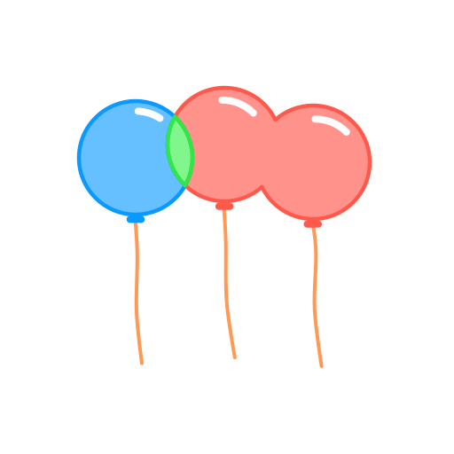

iOverlay

Introduction
- The iOverlay is a poly-bool library that supports main operations such as union, intersection, difference, xor, and self-intersection.
Features
- Operations: union, intersection, difference, and exclusion.
- Polygons: with holes, self-intersections, and multiple paths.
- Simplification: removes degenerate vertices and merges collinear edges.
- Buffering: offsets paths and polygons.
- Fill Rules: even-odd, non-zero, positive and negative.
Source Code
- Rust Version: iShape-Rust/iOverlay
- JS Version: iShape-Rust/iShape-js
Demo
This section showcases interactive examples built using iOverlay.
Use the demos below to explore how the library performs boolean operations on 2D shapes in real time.
- Stars Rotation – See overlapping polygons rotate and combine.
- Shapes Editor – Draw and modify shapes live in the browser.
- Stroke – Test stroke generation.
- Outline – Test outline generation.
- Overlay Editor – Wasm interactive editor.
Stars Rotation
Stars Rotation
Subject Star
Clip Star
Shapes Editor
Shapes Editor
Drag a vertex to edit the shape.
Stroke
Stroke Offset
Drag a vertex to edit the path.
Outline
Outline
Drag a vertex to edit the shape.
Overlay Editor
Drag a point to edit its coordinates, drag the canvas to pan, and scroll to zoom. Use Up / Down to switch examples. The Parameters button hides the right inspector to give the canvas more space.
Modes: Boolean, String, Stroke, Variable Stroke, and Outline.
The Eagle and Star examples are available in Outline (test_8 / test_9) and
Boolean (test_11 / test_12); choose Intersect to cut them with a spiral.
Performance Comparison
Benchmark project is here.
For Rust-only solver precision benchmarks, see Rust iOverlay Solver Benchmarks.
All tests were run on a machine with the following specifications:
3 GHz 6-Core Intel Core i5, 40GB 2667 MHz DDR4
All results are presented in seconds.
Solvers:
- iOverlay(Rust) v1.9.0 (multithreading on/off)
- iOverlay(Swift) v1.13.0
- Clipper2(C++) v1.4.0
- Boost(C++) v1.86.0
Checkerboard Test
| Squares | Swift | Rust (mt off) | Rust (mt on) | Clipper2 | Boost |
|---|---|---|---|---|---|
| 5 | 0.000014 | 0.000006 | 0.000006 | 0.000007 | 0.000045 |
| 25 | 0.000100 | 0.000036 | 0.000036 | 0.000038 | 0.000595 |
| 113 | 0.000589 | 0.000197 | 0.000196 | 0.000208 | 0.004446 |
| 481 | 0.004105 | 0.001117 | 0.001117 | 0.001017 | 0.060791 |
| 1985 | 0.012643 | 0.004914 | 0.004935 | 0.005182 | 1.103624 |
| 8065 | 0.055664 | 0.020674 | 0.019785 | 0.024013 | 21.080339 |
| 32513 | 0.234840 | 0.091871 | 0.083285 | 0.154054 | 412.630289 |
| 130561 | 0.993920 | 0.424643 | 0.372978 | 1.067439 | –– |
| 523265 | 4.410302 | 2.043570 | 2.008339 | 8.346041 | –– |
| 2095105 | 18.451646 | 9.291384 | 7.936810 | 73.312335 | –– |
| 8384513 | 78.719305 | 38.639666 | 33.742216 | 644.337867 | –– |
Not Overlap Test
| Squares | Swift | Rust (mt off) | Rust (mt on) | Clipper2 | Boost |
|---|---|---|---|---|---|
| 5 | 0.000009 | 0.000003 | 0.000003 | 0.000005 | 0.000003 |
| 25 | 0.000041 | 0.000012 | 0.000011 | 0.000021 | 0.000021 |
| 113 | 0.000204 | 0.000061 | 0.000062 | 0.000097 | 0.000223 |
| 481 | 0.001052 | 0.000346 | 0.000344 | 0.000457 | 0.002621 |
| 1985 | 0.004978 | 0.001679 | 0.001668 | 0.002114 | 0.036257 |
| 8065 | 0.021336 | 0.005912 | 0.005425 | 0.010783 | 0.558494 |
| 32513 | 0.089523 | 0.028454 | 0.024718 | 0.056281 | 8.852867 |
| 130561 | 0.375594 | 0.127448 | 0.107485 | 0.369146 | 146.041905 |
| 523265 | 1.663087 | 0.635898 | 0.538060 | 2.695334 | –– |
| 2095105 | 6.947932 | 2.708549 | 2.470210 | 20.665812 | –– |
| 8384513 | 28.777569 | 13.514846 | 9.601191 | 167.966801 | –– |
Lines Net Test
| Squares | Swift | Rust (mt off) | Rust (mt on) | Clipper2 | Boost |
|---|---|---|---|---|---|
| 4 | 0.000014 | 0.000004 | 0.000004 | 0.000004 | 0.000014 |
| 8 | 0.000049 | 0.000014 | 0.000014 | 0.000012 | 0.000054 |
| 16 | 0.000195 | 0.000049 | 0.000050 | 0.000043 | 0.000370 |
| 32 | 0.001295 | 0.000195 | 0.000196 | 0.000176 | 0.003175 |
| 64 | 0.004994 | 0.001013 | 0.001016 | 0.000749 | 0.055749 |
| 128 | 0.021239 | 0.004046 | 0.003970 | 0.003441 | 23.531991 |
| 256 | 0.091427 | 0.018815 | 0.020870 | 0.018417 | 412.528984 |
| 512 | 0.255989 | 0.088601 | 0.096745 | 0.115229 | –– |
| 1024 | 1.146842 | 0.417128 | 0.397470 | 0.759640 | –– |
| 2048 | 4.808548 | 1.844754 | 1.537385 | 5.595165 | –– |
| 4096 | 20.190101 | 7.514548 | 7.696920 | 45.934461 | –– |
Spiral Test
| Squares | Swift | Rust (mt off) | Rust (mt on) | Clipper2 |
|---|---|---|---|---|
| 2 | 0.000006 | 0.000002 | 0.000002 | 0.000002 |
| 4 | 0.000010 | 0.000005 | 0.000005 | 0.000004 |
| 8 | 0.000019 | 0.000009 | 0.000009 | 0.000007 |
| 16 | 0.000040 | 0.000020 | 0.000020 | 0.000014 |
| 32 | 0.000095 | 0.000048 | 0.000048 | 0.000031 |
| 64 | 0.000218 | 0.000129 | 0.000127 | 0.000083 |
| 128 | 0.000490 | 0.000304 | 0.000305 | 0.000202 |
| 256 | 0.001105 | 0.000668 | 0.000669 | 0.000476 |
| 512 | 0.003385 | 0.001599 | 0.001606 | 0.001195 |
| 1024 | 0.006174 | 0.003572 | 0.003560 | 0.002941 |
| 2048 | 0.013200 | 0.005000 | 0.004930 | 0.007578 |
| 4096 | 0.026065 | 0.009576 | 0.009528 | 0.020287 |
| 8192 | 0.055944 | 0.017583 | 0.018779 | 0.054647 |
| 16384 | 0.112375 | 0.040145 | 0.040263 | 0.181050 |
| 32768 | 0.237412 | 0.076642 | 0.076609 | 0.606854 |
| 65536 | 0.473847 | 0.181912 | 0.181387 | 2.013809 |
| 131072 | 0.981729 | 0.343917 | 0.331046 | 6.547658 |
| 262144 | 1.979541 | 0.781770 | 0.833816 | 21.171540 |
| 524288 | 4.101912 | 1.417144 | 1.472624 | 72.147615 |
| 1048576 | 8.254108 | 3.188509 | 3.232834 | 259.866180 |
Windows Test
| Squares | Swift | Rust (mt off) | Rust (mt on) | Clipper2 | Boost |
|---|---|---|---|---|---|
| 8 | 0.000016 | 0.000006 | 0.000006 | 0.000008 | 0.000006 |
| 32 | 0.000062 | 0.000021 | 0.000021 | 0.000028 | 0.000037 |
| 128 | 0.000276 | 0.000096 | 0.000097 | 0.000112 | 0.000266 |
| 512 | 0.001306 | 0.000519 | 0.000516 | 0.000507 | 0.002482 |
| 2048 | 0.005543 | 0.001675 | 0.001548 | 0.002454 | 0.030949 |
| 8192 | 0.023805 | 0.007519 | 0.006780 | 0.012364 | 0.448009 |
| 32768 | 0.104822 | 0.038832 | 0.034149 | 0.076850 | 7.013886 |
| 131072 | 0.445712 | 0.192338 | 0.159685 | 0.568316 | 109.745463 |
| 524288 | 1.862371 | 0.835050 | 0.703147 | 4.142673 | –– |
| 2097152 | 7.657815 | 3.761808 | 3.182362 | 33.165570 | –– |
| 8388608 | 30.833973 | 15.476744 | 12.058687 | 265.387333 | –– |
Nested Squares Test
| Squares | Swift | Rust (mt off) | Rust (mt on) | Clipper2 | Boost |
|---|---|---|---|---|---|
| 4 | 0.000022 | 0.000009 | 0.000009 | 0.000012 | 0.000153 |
| 8 | 0.000045 | 0.000017 | 0.000017 | 0.000023 | 0.000387 |
| 16 | 0.000098 | 0.000035 | 0.000034 | 0.000050 | 0.000792 |
| 32 | 0.000238 | 0.000081 | 0.000081 | 0.000118 | 0.001757 |
| 64 | 0.000624 | 0.000210 | 0.000217 | 0.000291 | 0.004145 |
| 128 | 0.001853 | 0.000594 | 0.000608 | 0.000806 | 0.010646 |
| 256 | 0.002398 | 0.001992 | 0.002016 | 0.003415 | 0.036101 |
| 512 | 0.005013 | 0.002555 | 0.002641 | 0.015989 | 0.141906 |
| 1024 | 0.016067 | 0.007851 | 0.005925 | 0.081267 | 0.560183 |
| 2048 | 0.033194 | 0.024523 | 0.018777 | 0.461883 | 2.425802 |
| 4096 | 0.150601 | 0.060516 | 0.044756 | 2.347209 | 11.419096 |
| 8192 | 0.311691 | 0.245160 | 0.165539 | 10.612424 | 49.299261 |
| 16384 | 0.752357 | 0.485605 | 0.331655 | 46.205474 | 206.646450 |
| 32768 | 2.581991 | 1.814993 | 1.148905 | 251.260857 | –– |
| 65536 | 10.368794 | 4.031631 | 2.197493 | 3502.233611 | –– |
| 131072 | 23.250746 | 15.731705 | 8.194153 | –– | –– |
| 262144 | 48.529555 | 30.809760 | 15.285741 | –– | –– |
Rust iOverlay Solver Benchmarks
All results were measured on Apple M4, 24 GB. Values are seconds per operation. The benchmark project is in performance/rust_app in the iOverlay repository.
i16/i32/64math solverson/offmultithreading feature
Average Comparison
Checkerboard Test
| N | i16 off | i32 off | i64 off | i16 on | i32 on | i64 on |
|---|---|---|---|---|---|---|
| 2 | 0.000002 | 0.000002 | 0.000003 | 0.000003 | 0.000002 | 0.000003 |
| 4 | 0.000015 | 0.000015 | 0.000017 | 0.000015 | 0.000015 | 0.000017 |
| 8 | 0.000082 | 0.000082 | 0.000099 | 0.000083 | 0.000081 | 0.000099 |
| 16 | 0.000426 | 0.000412 | 0.000498 | 0.000437 | 0.000409 | 0.000501 |
| 32 | 0.002236 | 0.002318 | 0.002733 | 0.002305 | 0.002299 | 0.002752 |
| 64 | 0.008070 | 0.008659 | 0.010388 | 0.007140 | 0.007243 | 0.008616 |
| 128 | 0.037559 | 0.040512 | 0.050085 | 0.027857 | 0.028986 | 0.035981 |
| 256 | 0.167375 | 0.178425 | 0.219622 | 0.120606 | 0.125711 | 0.158665 |
| 512 | 0.776731 | 0.827264 | 1.011703 | 0.568957 | 0.592768 | 0.724087 |
| 1024 | 3.385874 | 3.611125 | 4.393880 | 2.413621 | 2.610431 | 3.127404 |
Not Overlap Test
| N | i16 off | i32 off | i64 off | i16 on | i32 on | i64 on |
|---|---|---|---|---|---|---|
| 5 | 0.000001 | 0.000001 | 0.000001 | 0.000001 | 0.000001 | 0.000001 |
| 25 | 0.000005 | 0.000005 | 0.000006 | 0.000005 | 0.000005 | 0.000006 |
| 113 | 0.000024 | 0.000024 | 0.000027 | 0.000024 | 0.000024 | 0.000028 |
| 481 | 0.000136 | 0.000133 | 0.000152 | 0.000138 | 0.000132 | 0.000151 |
| 1985 | 0.000901 | 0.000912 | 0.001046 | 0.000908 | 0.000908 | 0.001053 |
| 8065 | 0.002461 | 0.002725 | 0.003178 | 0.002176 | 0.002322 | 0.002579 |
| 32513 | 0.011272 | 0.012319 | 0.014719 | 0.008377 | 0.008956 | 0.010409 |
| 130561 | 0.048214 | 0.053420 | 0.065100 | 0.034438 | 0.036901 | 0.044266 |
| 523265 | 0.220364 | 0.240664 | 0.301577 | 0.158055 | 0.177118 | 0.217189 |
| 2095105 | 0.927191 | 1.037521 | 1.300260 | 0.687777 | 0.745187 | 0.920391 |
| 8384513 | 4.580672 | 5.667204 | 3.282416 | 3.948376 |
Lines Net Test
| N | i16 off | i32 off | i64 off | i16 on | i32 on | i64 on |
|---|---|---|---|---|---|---|
| 4 | 0.000002 | 0.000002 | 0.000002 | 0.000002 | 0.000002 | 0.000002 |
| 8 | 0.000006 | 0.000006 | 0.000007 | 0.000006 | 0.000006 | 0.000007 |
| 16 | 0.000020 | 0.000020 | 0.000025 | 0.000021 | 0.000020 | 0.000025 |
| 32 | 0.000091 | 0.000087 | 0.000113 | 0.000092 | 0.000087 | 0.000114 |
| 64 | 0.000392 | 0.000425 | 0.000486 | 0.000403 | 0.000423 | 0.000497 |
| 128 | 0.001717 | 0.001791 | 0.002161 | 0.001716 | 0.001829 | 0.002118 |
| 256 | 0.008280 | 0.008733 | 0.010305 | 0.007047 | 0.007510 | 0.008971 |
| 512 | 0.037633 | 0.039941 | 0.048515 | 0.030516 | 0.032208 | 0.041422 |
| 1024 | 0.168466 | 0.181488 | 0.219835 | 0.130099 | 0.145159 | 0.181670 |
| 2048 | 0.751282 | 0.806123 | 0.991209 | 0.569064 | 0.622211 | 0.780686 |
| 4096 | 3.557761 | 4.420209 | 2.687778 | 3.220613 |
Spiral Test
| N | i16 off | i32 off | i64 off | i16 on | i32 on | i64 on |
|---|---|---|---|---|---|---|
| 2 | 0.000001 | 0.000001 | 0.000001 | 0.000001 | 0.000001 | 0.000001 |
| 4 | 0.000002 | 0.000002 | 0.000003 | 0.000002 | 0.000002 | 0.000003 |
| 8 | 0.000005 | 0.000005 | 0.000007 | 0.000005 | 0.000005 | 0.000008 |
| 16 | 0.000007 | 0.000010 | 0.000016 | 0.000007 | 0.000010 | 0.000016 |
| 32 | 0.000015 | 0.000021 | 0.000034 | 0.000015 | 0.000020 | 0.000033 |
| 64 | 0.000031 | 0.000043 | 0.000071 | 0.000031 | 0.000042 | 0.000069 |
| 128 | 0.000086 | 0.000092 | 0.000159 | 0.000076 | 0.000104 | 0.000154 |
| 256 | 0.000251 | 0.000298 | 0.000376 | 0.000279 | 0.000245 | 0.000380 |
| 512 | 0.000698 | 0.000790 | 0.001018 | 0.000764 | 0.000748 | 0.001008 |
| 1024 | 0.001818 | 0.002041 | 0.002658 | 0.001962 | 0.001984 | 0.002594 |
| 2048 | 0.004124 | 0.004207 | 0.005736 | 0.003950 | 0.004483 | 0.005705 |
| 4096 | 0.005286 | 0.007974 | 0.009687 | 0.004374 | 0.006270 | 0.005941 |
| 8192 | 0.010566 | 0.012796 | 0.017713 | 0.008446 | 0.009434 | 0.010722 |
| 16384 | 0.022061 | 0.028001 | 0.037901 | 0.017347 | 0.019526 | 0.023228 |
| 32768 | 0.045513 | 0.050997 | 0.075060 | 0.033183 | 0.034397 | 0.042546 |
| 65536 | 0.094961 | 0.113348 | 0.165686 | 0.065167 | 0.074229 | 0.091817 |
| 131072 | 0.201415 | 0.223653 | 0.336338 | 0.131789 | 0.146095 | 0.192015 |
| 262144 | 0.431597 | 0.541526 | 0.780771 | 0.301777 | 0.350941 | 0.449105 |
| 524288 | 0.666660 | 1.034178 | 1.536626 | 0.456391 | 0.744520 | 0.922172 |
Windows Test
| N | i16 off | i32 off | i64 off | i16 on | i32 on | i64 on |
|---|---|---|---|---|---|---|
| 8 | 0.000003 | 0.000003 | 0.000003 | 0.000003 | 0.000002 | 0.000003 |
| 32 | 0.000009 | 0.000008 | 0.000010 | 0.000009 | 0.000009 | 0.000010 |
| 128 | 0.000038 | 0.000038 | 0.000043 | 0.000038 | 0.000038 | 0.000043 |
| 512 | 0.000205 | 0.000195 | 0.000225 | 0.000204 | 0.000194 | 0.000224 |
| 2048 | 0.001127 | 0.001133 | 0.001338 | 0.001129 | 0.001138 | 0.001340 |
| 8192 | 0.003188 | 0.003421 | 0.004013 | 0.002633 | 0.002809 | 0.003138 |
| 32768 | 0.013917 | 0.015584 | 0.018626 | 0.010163 | 0.010892 | 0.012617 |
| 131072 | 0.063098 | 0.069925 | 0.088967 | 0.045737 | 0.049875 | 0.061721 |
| 524288 | 0.277322 | 0.312258 | 0.384434 | 0.199035 | 0.224817 | 0.267889 |
| 2097152 | 1.211561 | 1.382459 | 1.709374 | 0.909131 | 1.007965 | 1.175990 |
Nested Squares Test
| N | i16 off | i32 off | i64 off | i16 on | i32 on | i64 on |
|---|---|---|---|---|---|---|
| 4 | 0.000004 | 0.000004 | 0.000005 | 0.000004 | 0.000004 | 0.000004 |
| 8 | 0.000007 | 0.000007 | 0.000008 | 0.000007 | 0.000008 | 0.000009 |
| 16 | 0.000015 | 0.000015 | 0.000018 | 0.000015 | 0.000015 | 0.000018 |
| 32 | 0.000034 | 0.000033 | 0.000040 | 0.000034 | 0.000033 | 0.000040 |
| 64 | 0.000082 | 0.000079 | 0.000096 | 0.000083 | 0.000080 | 0.000097 |
| 128 | 0.000224 | 0.000213 | 0.000250 | 0.000228 | 0.000214 | 0.000253 |
| 256 | 0.000651 | 0.000659 | 0.000760 | 0.000698 | 0.000672 | 0.000756 |
| 512 | 0.002065 | 0.002060 | 0.002837 | 0.002015 | 0.002109 | 0.002833 |
| 1024 | 0.005356 | 0.005223 | 0.007613 | 0.005271 | 0.005426 | 0.007585 |
| 2048 | 0.009238 | 0.011609 | 0.015553 | 0.007070 | 0.007757 | 0.009880 |
| 4096 | 0.019098 | 0.023309 | 0.031292 | 0.019593 | 0.014683 | 0.018457 |
| 8192 | 0.081856 | 0.113196 | 0.046014 | 0.059750 | ||
| 16384 | 0.181416 | 0.245353 | 0.087646 | 0.122264 | ||
| 32768 | 0.667394 | 0.961019 | 0.322707 | 0.431346 | ||
| 65536 | 1.401006 | 2.059438 | 0.653741 | 0.933473 | ||
| 131072 | 5.445065 | 8.138039 | 2.410910 | 3.822923 |
Documentation
Filling Rules
Filling rules determine how the interior of a shape is defined. iOverlay supports 4 filling rules:
- Even-Odd: A point is inside the shape if a ray drawn from the point crosses the shape’s edges an odd number of times.
- Non-Zero: A point is inside the shape if the total winding number around the point is non-zero.
- Positive: Only regions with a positive winding number are considered inside.
- Negative: Only regions with a negative winding number are considered inside.
Overlay Rules
Overlay rules define how two shapes interact during Boolean operations:
- Union (A ∪ B): Combines the areas of both shapes.
- Intersection (A ∩ B): Retains only the overlapping area of both shapes.
- Difference (A - B): Subtracts the area of shape B from shape A.
- Exclusion (A ⊕ B): Combines the areas of both shapes but excludes the overlapping region.
Contours
Contours represent the boundaries of shapes and are categorized as:
- Outer Contours: Define the external boundary of a shape, ordered in a counterclockwise direction.
- Inner Contours (Holes): Define holes within a shape, ordered in a clockwise direction.
Overlay Graph
The overlay graph is a data structure that represents the intersections and overlays of two geometric objects. It is constructed by dividing all segments of the object contours into non-intersecting parts, where segments can only touch at their endpoints. Each segment in the graph contains information about its association with the original shapes, facilitating efficient Boolean operations.
Extract Shapes
After applying Boolean operations, the resulting shapes are extracted through a series of steps:
- Build Contour: Starting from the leftmost node, the algorithm traverses connected segments to form contours, marking each segment as visited to prevent duplication.
- Define Contour: Determines whether a contour is outer or inner based on its orientation and position.
- Matching Contours: Associates inner contours with their corresponding outer contours by analyzing spatial relationships.
Filling Rules
Scroll sideways to see all examples.
Even-Odd
Non-Zero
Positive
Negative
Filling Rules:
- Even-Odd: Only odd numbered sub-regions are filled
- Non-Zero: Only non-zero sub-regions are filled
- Positive: Only positive sub-regions are filled
- Negative: Only negative sub-regions are filled
Overlay Rules
Union, A or B
Intersection, A and B
Difference, A - B
Inverse Difference, B - A
Exclusion, A xor B
Contours
Outer and Inner
In the context of the Overlay Graph, contours are used to represent the boundaries of geometric objects. These contours are classified into two types: outer contours and inner contours.
Outer Contour:
- An outer contour is a sequence of points ordered in a counterclockwise direction.
- The outer contour defines the external boundary of a shape, enclosing the exterior space.
Inner Contour (Hole or Cave):
- An inner contour is a sequence of points ordered in a clockwise direction.
- Inner contours represent enclosed areas within an outer contour, often referred to as “holes” or “caves.”
Both outer and inner contours must be simple, meaning they must not self-intersect and must not share edges with other contours.
Overlay Graph
An Overlay Graph is a data structure representing the intersections and overlays of two geometric objects (A and B) defined by closed contours in 2D space.
The graph is constructed by dividing all the segments of the object contours into non-intersecting parts, where segments can only touch at their endpoints. Each segment in the graph contains the following properties:
- For each side of the segment, it stores information about its membership to object A and object B
- Segments do not intersect each other, but they may touch at their endpoints.
for more Overlay Graph examples see Shape Editor
Filter Segments
Difference, C = A - B
The resulting segments of C must not be inside body B and must belong to body A on one side.
The side associated solely with body A will represent the inner part of the resulting shape.
Difference, C = B - A
The resulting segments of C must not be inside body A and must belong to body B on one side.
The side associated solely with body B will represent the inner part of the resulting shape.
Union, C = A or B
The resulting segments of C must belong to either body A or body B, or to both. The opposite side of each segment must not belong to anybody.
The side associated with one of the bodies will represent the inner part of the resulting shape.
Intersection, C = A and B
The resulting segments of C must belong to both bodies A and B. The opposite side of each segment must not belong to both bodies simultaneously.
The side associated with both bodies A and B will represent the inner part of the resulting shape.
Exclusion, C = A xor B
The resulting segments of C must belong to either body A or body B, but not to both simultaneously. The opposite side of each segment must either belong to both bodies or to neither.
The side associated with one of the bodies (A or B) will represent the inner part of the resulting shape.
Extract Shapes
Once we apply boolean filter to Overlay Graph, we can begin extract contours.
Build Contour
Outer Contour
Inner Contour
The algorithm starts by selecting the leftmost node and proceeds by choosing the topmost segment connected to that node. The process continues by traversing to the next node along the selected segment.
At each node, the algorithm selects the next segment by rotating around the current node in a clockwise/counterclockwise direction for outer/inner contours and taking the first nearest segment.
To prevent segments from being visited twice, each segment is marked as visited upon traversal.
This process continues until the contour is complete, forming either an outer or inner contour.
By following this approach, outer contours are extracted in a counter-clockwise direction, while inner contours are extracted in a clockwise direction.
Define Contour
To define a contour, the algorithm begins by identifying the leftmost and topmost segment in the contour. The classification of the contour is determined as follows:
- If the left-top side of the segment is classified as the outer side, then the contour is an outer contour.
- If the left-top side of the segment is classified as the inner side, then the contour is an inner contour.
This method ensures each contour is correctly classified based on its orientation in 2D space.
Define Shape
A shape is defined as a group of contours, where the first contour is always an outer contour, and the subsequent contours (if any) are inner contours.
Matching Contours
To match inner contours to their corresponding outer contours:
- Draw a line downward from any point on the inner (target) contour.
- Identify the first segment encountered along the line that does not belong to the target contour.
- If the segment belongs to an outer contour, that contour is the container for the target contour.
- If the segment belongs to another inner contour, the container of that inner contour is also the container for the target contour.
Define Segment under Point
Segment under Point
To determine whether a segment AB is below a point P, one may be tempted to compute the value of ym at the point of intersection M, where a vertical line is dropped from P onto AB (i.e., xp = xm):
$$ y_{m} = \frac{y_{a} - y_{b}}{x_{a} - x_{b}}\cdot(x_{m} - x_{a}) + y_{a} $$
However, this approach can introduce precision issues due to the division involved.
A more reliable method involves using the order of traversal around the vertices of the triangle APB. If segment AB is below point P, the vertices A, P, and B will appear in a clockwise order.
This method uses the cross product of vectors PA and PB:
$$ a \times b = a_x b_y - a_y b_x $$
Since this method avoids division, it eliminates precision issues, making it stable for determining whether a segment is below a point.
Selecting the Closest Segment under Point
When multiple segments are positioned below point P, we need to determine which segment is the closest to P. This scenario can be divided into three distinct cases based on the configuration of the segments relative to P.
Left Case
When both segments share a common left vertex A, we check the positions of their right endpoints. If the vertices B0, B1, and A form a clockwise pattern, then AB0 is closer to P than AB1.
Right Case
When both segments share a common right vertex B, we check the positions of their left endpoints. If the vertices A0, A1, and B form a clockwise pattern, then A1B is closer to P than A0B.
Middle Case
In this case, one of the vertices (e.g., A1 or B0) lies inside the opposite segment. We use the point-segment comparison method to determine which of the segments is closer to P.
iTriangle
Introduction
- Easy way to get your triangulation!
Features
- Delaunay triangulation
- Uniform triangulation with a target edge length
- Interior vertex relaxation with fixed boundaries
- Break into convex polygons
- Support any kind of polygons
- Self-Intersection Resolving
Uniform Triangulation and Mesh Relaxation
uniform_triangulate(path, edgeLength) splits boundary edges and adds an interior
lattice to build a Delaunay mesh with a target edge length. It accepts a contour,
shape, or multiple shapes and returns Delaunay directly. The edge length must
be finite, positive, and above the integer engine’s coordinate precision.
After building the mesh, relax_mut() moves its interior vertices toward
the area centroids of their centroid-net cells. Outer and hole boundary vertices
remain fixed. The same relaxed mesh can produce triangles, convex polygons, or
a centroid net. Try the Relaxation checkbox in Tessellation,
enabled by default with up to 24 iterations. Subdivision defaults to Uniform;
choose Circumcenters to compare it with the previous refinement method. The
slider controls target edge length for Uniform and maximum area for Circumcenters.
const triangulator = new Triangulator();
const delaunay = triangulator.uniform_triangulate(shape, 40);
triangulator.free();
const relaxation = delaunay.relax_mut({ maxIterations: 24 });
const mesh = delaunay.to_triangulation();
const cells = delaunay.to_centroid_net(0);
delaunay.free();
RelaxationOptions accepts maxIterations (a non-negative integer, default 8)
and tolerance (a finite, non-negative distance in input coordinates, default 0).
Options may be omitted. The returned RelaxationResult contains iterations
and converged. Invalid options throw an error before modifying the mesh.
To use the previous subdivision method, create a mesh with
triangulate(shape).into_delaunay() and call refine_with_circumcenters(maxArea)
before relaxation.
Use to_centroid_net(0) to return every cell. Its argument is a minimum cell
area filter, independent of the area threshold used to refine the triangles.
Source Code
- Swift Version: iShape-Swift/iTriangle
- Rust Version: iShape-Rust/iTriangle
Demo
This section contains interactive examples that demonstrate how iTriangle performs triangulation and tessellation.
- Triangulation – Basic polygon triangulation.
- Tessellation – Subdivision of polygons into smaller.
Triangulation
Triangulation
Drag a vertex to edit the shape.
Tessellation
Tessellation
Drag a vertex to edit the shape. Uniform splits boundary edges and fills the interior; relaxation smooths the mesh while keeping its boundary vertices fixed.
Performance Comparison
Benchmark projects are:
All benchmarks were executed on the following machine:
3 GHz 6-Core Intel Core i5, 40GB 2667 MHz DDR4
All results are presented in microseconds (10⁻⁶ sec).
Each test was repeated multiple times, and the average result is shown.
All input shapes are clean (non-self-intersecting), and the logic was optimized to achieve maximum performance.
Solvers
- iTriangle (Earcut64, Rust) v0.36.3 — raw triangulation, no holes, limited to ≤64 points, validation disabled
- iTriangle (Monotone, Rust) v0.36.3 — raw triangulation, validation disabled
- iTriangle (Delaunay, Rust) v0.36.3 — Delaunay triangulation, validation disabled
- MapBox (Earcut Rust) v0.5.0 – Rust port – raw triangulation, validation disabled
- MapBox (Earcut C++) v2.2.4 – C++ official – raw triangulation, validation disabled
- Triangle (Delaunay C) v1.6 – C official - constrained Delaunay triangulation, validation disabled
Star Test
Raw
| Count | Earcut64 | Monotone | Earcut Rust | Earcut C++ |
|---|---|---|---|---|
| 8 | 0.3 | 0.5 | 0.73 | 0.42 |
| 16 | 0.66 | 1.6 | 1.23 | 0.5 |
| 32 | 1.6 | 3.9 | 2.6 | 1.2 |
| 64 | 4.6 | 8.35 | 5.6 | 3.3 |
| 128 | - | 17.8 | 12.6 | 8.4 |
| 256 | - | 37.5 | 29.1 | 22.9 |
| 512 | - | 79.7 | 80.7 | 72.7 |
| 1024 | - | 172 | 259 | 209 |
| 2048 | - | 388 | 736 | 641 |
| 4096 | - | 898 | 3158 | 2804 |
| 8192 | - | 1824 | 13435 | 11479 |
| 16384 | - | 3846 | 51688 | 44017 |
Delaunay
| Count | iTriangle | Triangle |
|---|---|---|
| 8 | 0.46 | 4.3 |
| 16 | 1.0 | 8.3 |
| 32 | 2.5 | 25 |
| 64 | 6.65 | 130 |
| 128 | 19.7 | 271 |
| 256 | 40.5 | 523 |
| 512 | 85.9 | 1006 |
| 1024 | 194 | 1704 |
| 2048 | 424 | 2828 |
| 4096 | 987 | 4806 |
| 8192 | 2074 | 8581 |
| 16384 | 4533 | 16384 |
Spiral Test
Raw
| Count | Earcut64 | Monotone | Earcut Rust | Earcut C++ |
|---|---|---|---|---|
| 8 | 0.35 | 0.7 | 0.77 | 0.42 |
| 16 | 1.2 | 1.4 | 1.66 | 0.77 |
| 32 | 4.0 | 3.0 | 6.25 | 3.4 |
| 64 | 15.4 | 6.2 | 18.6 | 19.8 |
| 128 | - | 12.8 | 71.6 | 66 |
| 256 | - | 26.7 | 295 | 306 |
| 512 | - | 55.5 | 1230 | 1438 |
| 1024 | - | 120 | 5301 | 7595 |
| 2048 | - | 279 | 22682 | 50140 |
| 4096 | - | 685 | 96933 | 376060 |
| 8192 | - | 1435 | 416943 | 3.7kk |
| 16384 | - | 3080 | 1812147 | 43.4kk |
Delaunay
| Count | iTriangle | Triangle |
|---|---|---|
| 8 | 0.51 | 3.2 |
| 16 | 1.54 | 8.7 |
| 32 | 4.7 | 21.5 |
| 64 | 16.9 | 35.6 |
| 128 | 15.0 | 66.9 |
| 256 | 29.7 | 166 |
| 512 | 62.2 | 340 |
| 1024 | 139 | 728 |
| 2048 | 313 | 1469 |
| 4096 | 735 | 82948 |
| 8192 | 1442 | 6609 |
| 16384 | 3463 | 13863 |
Star with Hole Test
Raw
| Count | Monotone | Earcut Rust | Earcut C++ |
|---|---|---|---|
| 128 | 12.1 | 31.9 | 30.2 |
| 256 | 22.4 | 86.6 | 78.8 |
| 512 | 42.3 | 227 | 222 |
| 1024 | 84.4 | 650 | 593 |
| 2048 | 174 | 2053 | 1825 |
| 4096 | 333 | 7102 | 5702 |
| 8192 | 755 | 26197 | 22390 |
| 16384 | 1636 | 102874 | 80154 |
Delaunay
| Count | iTriangle | Triangle |
|---|---|---|
| 128 | 16.8 | 201 |
| 256 | 32.8 | 410 |
| 512 | 61.6 | 808 |
| 1024 | 121 | 1616 |
| 2048 | 250 | 3055 |
| 4096 | 505 | 6410 |
| 8192 | 1401 | 12919 |
| 16384 | 4093 | 30704 |
Star with 8 holes Test
Raw
| Count | Monotone | Earcut Rust | Earcut C++ |
|---|---|---|---|
| 256 | 19.3 | 117 | 43 |
| 512 | 30.3 | 260 | 107 |
| 1024 | 53.7 | 437 | 270 |
| 2048 | 107 | 5018 | 576 |
| 4096 | 200 | 40596 | 1517 |
| 8192 | 388 | 156287 | 3802 |
| 16384 | 797 | 273567 | 12687 |
Delaunay
| Count | iTriangle | Triangle |
|---|---|---|
| 256 | 23.7 | 330 |
| 512 | 41.6 | 546 |
| 1024 | 71.4 | 951 |
| 2048 | 143 | 1777 |
| 4096 | 276 | 3398 |
| 8192 | 567 | 6921 |
| 16384 | 1539 | 13748 |
Delaunay
Delaunay
Drag a vertex to edit the triangulation.
What is the Delaunay Condition?
When creating a triangulation network, the Delaunay condition aims to form triangles such that their circumscribed circles do not contain any other points from the dataset. In simpler terms, it ensures that triangles are “well-shaped” rather than “skinny,” making the network more balanced and useful for various applications.
If the condition \(\alpha + \beta < \pi\) holds, it implies that the point \(P\) will lie outside the circumscribed circle. This confirms that a pair of triangles satisfies the Delaunay condition.
$$ \alpha + \beta < \pi \Rightarrow \sin(\alpha + \beta) > 0 $$
$$ \sin(\alpha + \beta) = \sin(\alpha)\cos(\beta) + \cos(\alpha)\sin(\beta) $$
Calculating \(\cos(\alpha)\) and \(\sin(\alpha)\):
$$ \cos(\alpha) = \frac{\vec{a} \cdot \vec{b}}{|a||b|} = \frac{a_{x}b_{x} + a_{y}b_{y}}{|a||b|} $$
$$ \sin(\alpha) = \sqrt{1- \cos^2(\alpha)} = … = \frac{|a_{x}b_{y} - b_{x}a_{y}|}{|a||b|} = \frac{|\vec{a} \times \vec{b}|}{|a||b|} $$
Calculating \(\cos(\beta)\) and \(\sin(\beta)\):
$$ \cos(\beta) = \frac{\vec{c} \cdot \vec{d}}{|c||d|} = \frac{c_{x}d_{x} + c_{y}d_{y}}{|c||d|} $$
$$ \sin(\beta) = \frac{|\vec{c} \times \vec{d}|}{|c||d|} = \frac{|c_{x}d_{y} - d_{x}c_{y}|}{|c||d|} $$
Final Equation:
$$ \sin(\alpha + \beta) = \frac{|a_{x}b_{y} - b_{x}a_{y}|\cdot(c_{x}d_{x} + c_{y}d_{y}) + (a_{x}b_{x} + a_{y}b_{y})\cdot|c_{x}d_{y} - c_{x}d_{y}|}{|a||b||c||d|} > 0 $$
$$ |a_{x}b_{y} - b_{x}a_{y}|\cdot(c_{x}d_{x} + c_{y}d_{y}) + (a_{x}b_{x} + a_{y}b_{y})\cdot|c_{x}d_{y} - d_{x}c_{y}| > 0 $$
Or in vector form:
$$ |\vec{a} \times \vec{b}|(\vec{c} \cdot \vec{d}) + (\vec{a} \cdot \vec{b})|\vec{c} \times \vec{d}| > 0 $$
iCurve
iCurve brings Boolean operations to paths made from straight lines, quadratic and cubic Bézier curves, and elliptic arcs.
Unlike a polygon-only workflow, the result retains curve segments. A result can
be rendered or serialized as JavaScript data, or passed directly to another
operation as reusable CurveGeometry.
Features
- Curve segments: lines, quadratic and cubic Bézier curves, and elliptic arcs.
- Boolean operations: union, intersection, difference, inverse difference, and exclusion.
- Self-intersection resolving: apply a fill rule to a subject without a clip.
- Reusable geometry: chain operations without converting the result through JavaScript objects.
- Controlled approximation: tune curve subdivision when the default settings are not suitable for the input scale.
- Conversion diagnostics: detect contours or segments that collapse in the discrete precision model.
Workflow
- Build each closed shape with
CurveBuilder. - Create a
CurveOverlayfrom the subject and clip geometry. - Apply an
OverlayRuleandFillRule. - Keep the returned
CurveGeometryfor another operation, or calltoData()for rendering and serialization.
See Getting Started for a complete example and API Reference for the available methods and output types.
Interactive Demos
- Boolean Playground — edit curve shapes and their control points by hand.
- Curve Motion Lab — animate many cubic contours while measuring Boolean solve time and frame rate.
- TypeCurve — run operations on editable font outlines.
Source Code
- Rust Version: iShape-Rust/iCurve
- JavaScript and WebAssembly bindings: iShape-Rust/iShape-js
Boolean Playground
iCurve · live WASM
Boolean Playground
Move the shapes or edit their curve handles. Every change is rebuilt with CurveBuilder and resolved by CurveOverlay.
Bloom & Sun
A six-petal flower meets a warm elliptical sun.
Drag a filled shape to move it · drag any handle to reshape it
Loading WebAssembly…
Curve Motion Lab
iCurve · animated WASM benchmark
Curve Motion Lab
Stress-test live Boolean operations on continuously rebuilt cubic Bézier contours. Increase the workload and watch both the geometry and timings respond.
Dashed inputs · solid result · measured in this browser
Loading WebAssembly…
TypeCurve
iCurve · text outlines · live WASM
TypeCurve
One line of Latin letters and digits, up to 12 characters. Spaces do not affect Subject / Clip alternation.
Click a letter to edit · drag its fill to move · drag handles to reshape
Loading the local font and WebAssembly…
Typeface: Atkinson Hyperlegible by Braille Institute, licensed under SIL OFL 1.1. Local outline parsing uses opentype.js under the MIT License.
Getting Started
Install and initialize the WebAssembly package:
npm install ishape_wasm
Boolean operation
The builder uses familiar Canvas-style path methods. Every contour must be
closed before build() is called.
import init, {
CurveBuilder,
CurveOverlay,
FillRule,
OverlayRule,
} from 'ishape_wasm';
await init();
const subjectBuilder = new CurveBuilder();
subjectBuilder.moveTo(0, 0);
subjectBuilder.bezierCurveTo(25, -30, 75, -30, 100, 0);
subjectBuilder.lineTo(100, 80);
subjectBuilder.lineTo(0, 80);
subjectBuilder.closeContour();
const subject = subjectBuilder.build();
const clipBuilder = new CurveBuilder();
clipBuilder.addEllipse(65, 35, 45, 30, 0, false);
const clip = clipBuilder.build();
const operation = new CurveOverlay(subject, clip);
const result = operation.overlay(
OverlayRule.Intersect,
FillRule.NonZero,
);
console.log(result.shapeCount);
console.log(result.contourCount);
console.log(result.segmentCount);
console.log(result.toData());
CurveOverlay is a single-use operation object: overlay() consumes it. The
input and result CurveGeometry objects remain reusable.
Building contours
Available segment methods are:
const builder = new CurveBuilder();
builder.moveTo(10, 10);
builder.lineTo(60, 10);
builder.quadraticCurveTo(90, 40, 60, 70);
builder.bezierCurveTo(40, 90, 20, 90, 10, 70);
builder.lineTo(10, 10);
builder.closeContour();
// Angles and ellipse rotation are expressed in radians.
builder.ellipticArcTo(
120, 60, // center
30, 20, // radii
0, // rotation
0, // start angle
Math.PI, // sweep angle
);
builder.closeContour();
// A complete ellipse is added as a new closed contour.
builder.addEllipse(200, 60, 30, 20, 0, false);
const geometry = builder.build();
Call moveTo() only after the previous contour has been closed. After a
successful build(), the builder is reset and can be used for another shape.
Resolving self-intersections
When there is no clip geometry, create a subject-only operation:
const operation = CurveOverlay.fromSubject(subject);
const resolved = operation.resolveSubject(FillRule.EvenOdd);
The fill rule determines which regions of overlapping or self-intersecting contours belong to the result.
Precision controls
For most inputs, automatic scaling and the default approximation are sufficient. Advanced callers can inspect or override them before running the operation:
const operation = new CurveOverlay(subject, clip);
operation.setApproximation({
minChordLength: 0.001,
angleTolerance: 0.125,
maxDepth: 16,
});
console.log(operation.scale());
console.log(operation.conversionReport());
const result = operation.overlay(
OverlayRule.Union,
FillRule.NonZero,
);
Use CurveOverlay.withScale(subject, clip, scale) only when the application
needs an explicit float-to-integer conversion scale. A conversion report with
hasDegeneracies: true indicates that some input geometry collapsed or an arc
had to be linearized during conversion.
API Reference
CurveBuilder
Creates one reusable curve shape. A shape may contain multiple closed contours.
| Method | Description |
|---|---|
new CurveBuilder() | Creates an empty builder. |
moveTo(x, y) | Starts a contour. The preceding contour must be closed. |
lineTo(x, y) | Adds a straight segment. |
quadraticCurveTo(cpx, cpy, x, y) | Adds a quadratic Bézier segment. |
bezierCurveTo(cp1x, cp1y, cp2x, cp2y, x, y) | Adds a cubic Bézier segment. |
ellipticArcTo(x, y, radiusX, radiusY, rotation, startAngle, sweepAngle) | Adds an elliptic arc. Angles are in radians. |
addEllipse(x, y, radiusX, radiusY, rotation, clockwise) | Adds a complete ellipse as a new closed contour. |
closeContour() | Closes the active contour. |
build() | Returns CurveGeometry and resets the builder after success. |
CurveGeometry
Stores one or more curve shapes in WebAssembly memory.
| Member | Description |
|---|---|
shapeCount | Number of shapes. |
contourCount | Total number of contours. |
segmentCount | Total number of curve segments. |
toData() | Converts the geometry to ordinary typed JavaScript data. |
The toData() result has the following structure:
type CurvePoint = [number, number];
type CurveSegmentData =
| { type: 'line'; to: CurvePoint }
| { type: 'quad'; ctrl: CurvePoint; to: CurvePoint }
| {
type: 'cubic';
ctrl0: CurvePoint;
ctrl1: CurvePoint;
to: CurvePoint;
}
| { type: 'arc'; arc: RationalArcData };
type CurveContourData = {
start: CurvePoint;
segments: CurveSegmentData[];
};
type CurveShapeData = CurveContourData[];
type CurveShapesData = CurveShapeData[];
Arc data contains its ellipse metadata, angles, rational quadratic control points, and weights. The control points and weights are the authoritative geometry.
CurveOverlay
Represents a single Boolean or subject-resolving operation.
| Method | Description |
|---|---|
new CurveOverlay(subject, clip) | Creates an operation with automatic scaling. |
CurveOverlay.fromSubject(subject) | Creates an operation for resolveSubject(). |
CurveOverlay.withScale(subject, clip, scale) | Creates an operation with an explicit conversion scale. |
setApproximation(options) | Configures curve approximation before execution. |
scale() | Returns the effective conversion scale. |
conversionReport() | Reports collapsed or linearized input geometry. |
overlay(overlayRule, fillRule) | Runs a Boolean operation and returns CurveGeometry. |
resolveSubject(fillRule) | Resolves the subject using the selected fill rule. |
overlay() and resolveSubject() consume the operation. Calling an operation
method again on the same instance throws an error.
Approximation options
type CurveApproximationOptions = {
minChordLength?: number;
angleTolerance?: number; // range: (0, 1], default: 0.125
maxDepth?: number; // range: 0...16, default: 16
};
Options are optional and may be supplied independently. minChordLength must
be a finite positive number when present.
Conversion report
type CurveConversionReport = {
contourCount: number;
collapsedContourCount: number;
collapsedSegmentCount: number;
linearizedArcCount: number;
hasDegeneracies: boolean;
};
type CurveOverlayConversionReport = {
subject: CurveConversionReport;
clip?: CurveConversionReport;
hasDegeneracies: boolean;
};
Rules
Use the existing OverlayRule values (Subject, Clip, Intersect, Union,
Difference, InverseDifference, or Xor) and FillRule values (EvenOdd,
NonZero, Positive, or Negative).